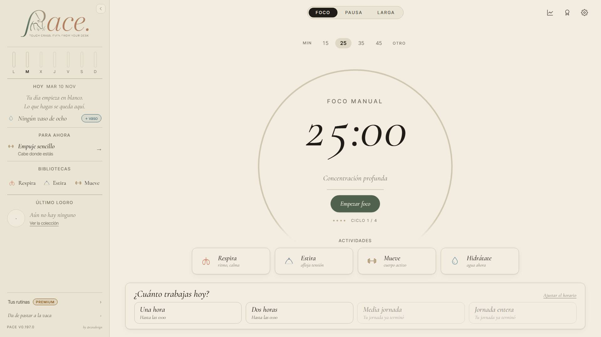
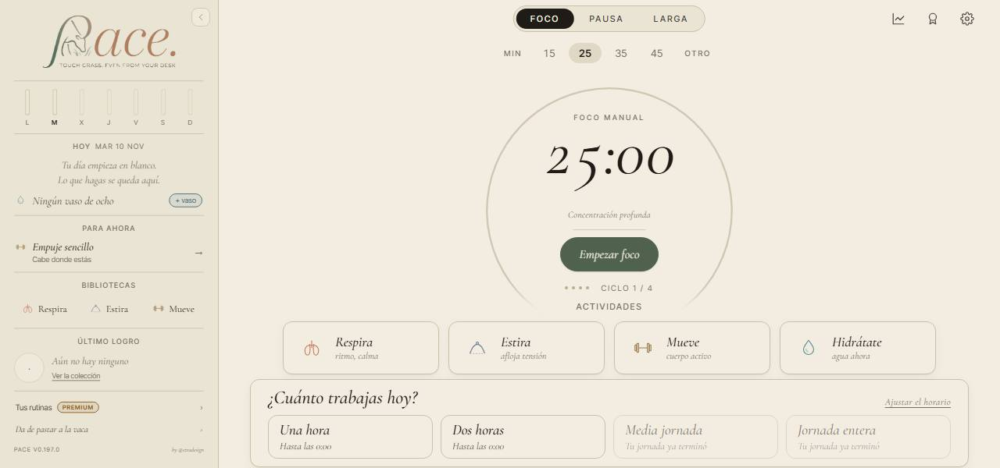
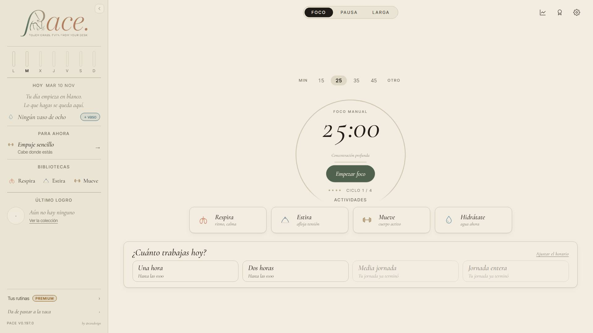
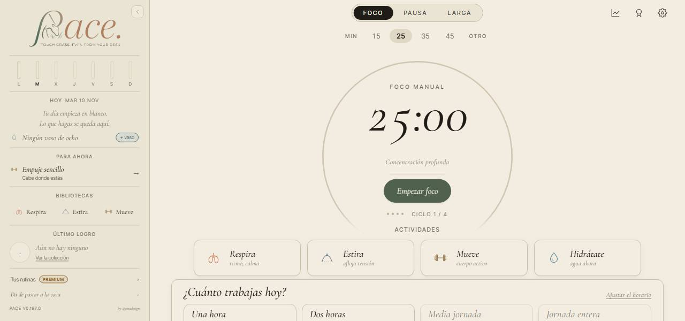
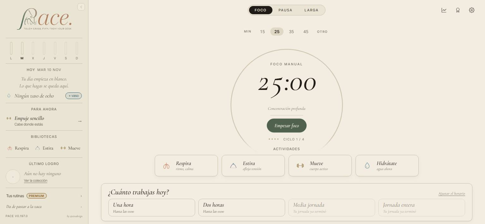
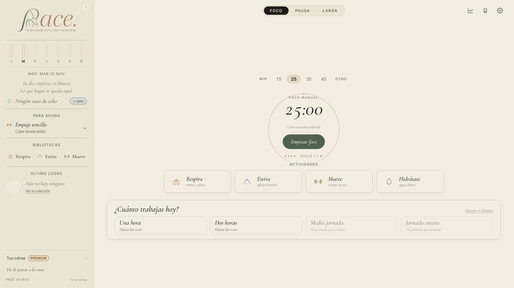
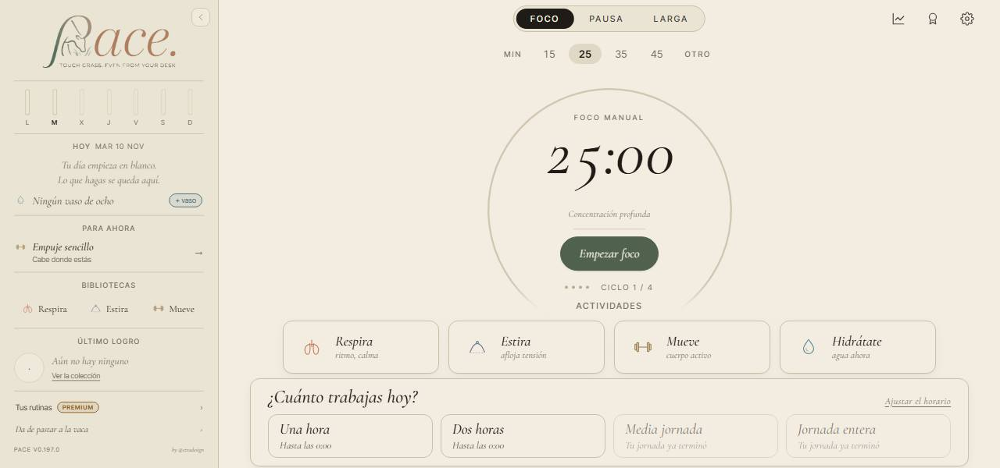
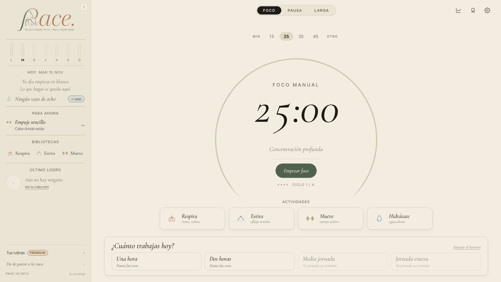

<title>El aro fijo</title>
<meta name="claude:viewport-fit-sides" content="cover">
<link rel="stylesheet" href="https://fonts.googleapis.com/css2?family=Cormorant+Garamond:ital,wght@1,500;1,600&family=Inter:wght@400;500;600&display=swap">
<style>
/* Una hoja de trabajo de PACE: columna de lectura, fotos a la escala de su ventana. */
:root {
  --papel: #f3ede2; --hoja: #faf6ee; --tinta: #2b2620; --suave: #6f665a;
  --oliva: #55654a; --terracota: #b5643f; --linea: #ddd3c3;
  --serif: "Cormorant Garamond", Georgia, serif;
  --texto: "Inter", system-ui, sans-serif;
}
@media (prefers-color-scheme: dark) { :root:not([data-theme="light"]) {
  --papel: #1d1a14; --hoja: #26221b; --tinta: #eee6d8; --suave: #b3a895;
  --oliva: #a3b58f; --terracota: #e0906a; --linea: #3d372d; color-scheme: dark } }
:root[data-theme="dark"] {
  --papel: #1d1a14; --hoja: #26221b; --tinta: #eee6d8; --suave: #b3a895;
  --oliva: #a3b58f; --terracota: #e0906a; --linea: #3d372d; color-scheme: dark }
body { background: var(--papel); color: var(--tinta); font: 15px/1.6 var(--texto);
  padding-left: max(16px, env(safe-area-inset-left, 0px)); padding-right: max(16px, env(safe-area-inset-right, 0px)); padding-block: 40px 64px; }
main { max-width: 980px; margin: 0 auto; display: grid; gap: 44px; }
h1, h2 { font-family: var(--serif); font-style: italic; font-weight: 600; line-height: 1.1; text-wrap: balance; margin: 0; }
h1 { font-size: 46px; }
h2 { font-size: 30px; }
p { margin: 0; max-width: 66ch; }
section { display: grid; gap: 16px; }
.eti { font-size: 12px; letter-spacing: .12em; text-transform: uppercase; color: var(--suave); }
.lead { font-size: 17px; }
.tabla { overflow-x: auto; }
table { border-collapse: collapse; font-variant-numeric: tabular-nums; min-width: 520px; width: 100%; }
th, td { text-align: left; padding: 8px 12px; border-bottom: 1px solid var(--linea); }
th { font-weight: 500; color: var(--suave); font-size: 13px; }
td.n { text-align: right; }
tr.tuya td { background: var(--hoja); font-weight: 600; }
.par { display: grid; grid-template-columns: 1fr 1fr; gap: 16px; align-items: end; }
figure { margin: 0; display: grid; gap: 6px; min-width: 0; }
figure img { width: 100%; border: 1px solid var(--linea); border-radius: 4px; display: block; }
figcaption { font-size: 13px; color: var(--suave); }
figcaption b { color: var(--tinta); font-weight: 600; }
.opcion { background: var(--hoja); border: 1px solid var(--linea); border-radius: 8px; padding: 22px; display: grid; gap: 14px; }
.opcion.reco { border-color: var(--oliva); border-width: 2px; }
.cab { display: flex; flex-wrap: wrap; gap: 8px 14px; align-items: baseline; }
.letra { font-family: var(--serif); font-style: italic; font-size: 34px; line-height: 1; color: var(--terracota); }
.sello { font-size: 12px; letter-spacing: .08em; text-transform: uppercase; color: var(--hoja); background: var(--oliva); padding: 3px 9px; border-radius: 99px; }
/* Las cuatro ventanas a la misma escala: cada foto ocupa lo que su ventana. */
.cuatro { display: flex; flex-wrap: wrap; gap: 12px; align-items: flex-end; }
.cuatro figure:nth-child(1) { flex: 0 1 calc(1280 / 2560 * 46%); }
.cuatro figure:nth-child(2) { flex: 0 1 calc(1536 / 2560 * 46%); }
.cuatro figure:nth-child(3) { flex: 0 1 calc(1920 / 2560 * 46%); }
.cuatro figure:nth-child(4) { flex: 0 1 46%; }
.pierde { color: var(--suave); }
.pierde b { color: var(--tinta); font-weight: 600; }
.montada { border-top: 2px solid var(--oliva); padding-top: 18px; font-family: var(--serif); font-style: italic; font-size: 26px; }
@media (max-width: 640px) {
  h1 { font-size: 36px; }
  .par { grid-template-columns: 1fr; }
  .cuatro figure:nth-child(n) { flex: 1 1 100%; }
}
</style>

<main>
  <header style="display:grid;gap:12px">
    <div class="eti">El reloj de Foco · 10 de noviembre</div>
    <h1>El aro fijo</h1>
    <p class="lead">Viste que en el escritorio el aro cambia de tamaño con la ventana. Es verdad: en tu ventana mide 372 px, en una pantalla de 1920 × 1080 mide 650 y en una de 2560 × 1440 llega a 866.</p>
  </header>

  <section>
    <h2>Qué pasaba</h2>
    <p>El aro era siempre el más grande que cupiera sin hacer scroll, hasta 520 px. Y en pantallas grandes toda la app se agranda con la ventana, el aro con ella. Medido por libre, con la barra lateral abierta:</p>
    <div class="tabla">
      <table>
        <thead><tr><th>Ventana</th><th class="n">Aro hoy</th><th>Por qué</th></tr></thead>
        <tbody>
          <tr><td>1280 × 600</td><td class="n">327 px</td><td>no cabe más alto</td></tr>
          <tr class="tuya"><td>1536 × 710, la tuya</td><td class="n">372 px</td><td>el más grande que cabe</td></tr>
          <tr><td>1536 × 768</td><td class="n">441 px</td><td>un poco más de alto, un aro mayor</td></tr>
          <tr><td>1920 × 768</td><td class="n">400 px</td><td>más ancha y el aro encoge</td></tr>
          <tr><td>1536 × 1080</td><td class="n">520 px</td><td>su máximo</td></tr>
          <tr><td>1920 × 1080</td><td class="n">650 px</td><td>el máximo, agrandado con la app</td></tr>
          <tr><td>2560 × 1440</td><td class="n">866 px</td><td>lo mismo, más agrandado</td></tr>
        </tbody>
      </table>
    </div>
    <p>En tu misma ventana también cambia con lo que hay debajo: con el día de «A tu ritmo» en marcha mide 332, y 408 si cierras la barra lateral.</p>
    <div class="par">
      <figure><figcaption><b>1536 × 710</b> · aro de 372 px</figcaption></figure>
      <figure><figcaption><b>1920 × 1080</b> · aro de 650 px</figcaption></figure>
    </div>
  </section>

  <section>
    <h2>¿Fallo o diseño?</h2>
    <p>Las dos cosas. Que crezca con la ventana era el diseño. Pero había dos fallos que nada pedía: el máximo de 520 px no frenaba nada en pantallas grandes (llegaba a 866), y al ensanchar la ventana el aro encogía (de 441 a 400). Lo que no hace: saltar. Al arrastrar la ventana crece y encoge suave, y al volver recupera siempre su tamaño.</p>
  </section>

  <section>
    <h2>Tres opciones</h2>
    <p>Las cuatro ventanas, a la misma escala entre ellas. En todas se midió que nada se tapa ni se sale, por libre y con el día en marcha.</p>

    <div class="opcion reco">
      <div class="cab"><span class="letra">A</span><strong>Fijo, y solo encoge si no cabe</strong><span class="sello">Recomendada</span></div>
      <div class="cuatro">
        <figure><figcaption><b>1280 × 600</b> · 330</figcaption></figure>
        <figure><figcaption><b>1536 × 710</b> · 372</figcaption></figure>
        <figure><figcaption><b>1920 × 1080</b> · 372</figcaption></figure>
        <figure><figcaption><b>2560 × 1440</b> · 372</figcaption></figure>
      </div>
      <p>El aro mide 372 px, el de tu ventana, y no crece nunca. En una ventana baja encoge lo justo para que la home siga sin scroll. Con el zoom del navegador alejado se ve como al 100 %. El móvil no cambia.</p>
      <p class="pierde"><b>Lo que se pierde:</b> en pantallas grandes lo demás sigue creciendo y el aro se ve pequeño a su lado (mira la de 2560). Y en tu ventana, con el día en marcha y la barra abierta, se queda en 332, porque 372 no cabe.</p>
    </div>

    <div class="opcion">
      <div class="cab"><span class="letra">B</span><strong>Fijo siempre</strong></div>
      <div class="cuatro">
        <figure><figcaption><b>1280 × 600</b> · 372</figcaption></figure>
        <figure><figcaption><b>1536 × 710</b> · 372</figcaption></figure>
        <figure><figcaption><b>1920 × 1080</b> · 372</figcaption></figure>
        <figure><figcaption><b>2560 × 1440</b> · 372</figcaption></figure>
      </div>
      <p>372 px en todas, también en la ventana baja. Lo que no cabe debajo se alcanza haciendo scroll en la home.</p>
      <p class="pierde"><b>Lo que se pierde:</b> la home sin scroll. Hay que bajar 35 px a 1280 × 600 (77 con el día) y 31 en tu ventana con el día en marcha.</p>
    </div>

    <div class="opcion">
      <div class="cab"><span class="letra">C</span><strong>Como hoy</strong></div>
      <div class="cuatro">
        <figure><figcaption><b>1280 × 600</b> · 327</figcaption></figure>
        <figure><figcaption><b>1536 × 710</b> · 372</figcaption></figure>
        <figure><figcaption><b>1920 × 1080</b> · 650</figcaption></figure>
        <figure><figcaption><b>2560 × 1440</b> · 866</figcaption></figure>
      </div>
      <p>El aro más grande que quepa, agrandado con la app en pantallas grandes. Siguen los dos fallos.</p>
    </div>
  </section>

  <section>
    <h2>La recomendada</h2>
    <p>La A: es fija en todas las ventanas donde cabe y no rompe tu regla de la home sin scroll.</p>
    <p class="montada">Montada: la A, espera tu júntalo.</p>
  </section>
</main>
